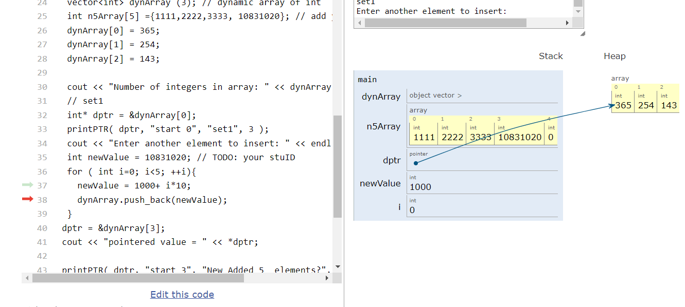
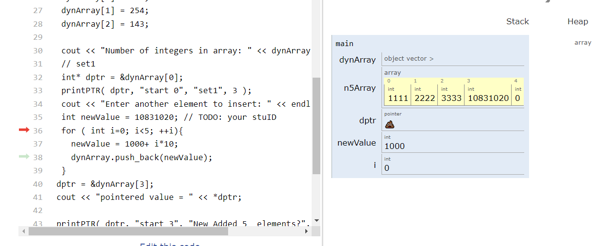
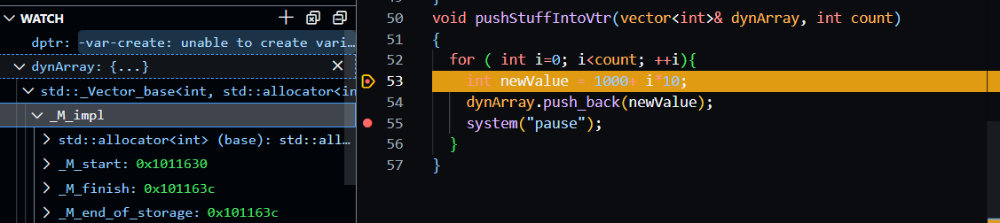
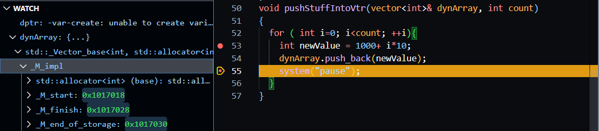

| 班級 | 學號 | 姓名 |
|---|---|---|
| 四機械四乙 | B10831020 | 吳宇昕 |
sorce code and replit url
兩種情況下，函式都能正常運作。迴圈最後一行使用的
++運算子作用於int pointer時，每次都會自動偏移4個byte，也就是int的大小。因此無論函式的引述宣告為[]或*都可以順利執行。
void pushStuffIntoVtr(vector<int>& dynArray, int count)
{
for ( int i=0; i<count; ++i){
int newValue = 1000+ i*10;
dynArray.push_back(newValue);
}
}
Vector以pass by reference方式傳入函式，方便修改其記憶體位置的值。同時，pass by reference可以避免複製整個vector至另一個函式的stack frame，節省記憶體使用量。
這項作業介紹了tutor這良好的工具，可以視覺化呈現各個變數的數值，以及pointer所指向的位置。甚至當pointer正指向一個無效的記憶體位置時，還會顯示屎的表情符號，清楚呈現一個失控的pointer可以摧毀人的一天。
其中有個問題讓我花了非常多時間理解，就是為何原程式執行37行以前，
dptr是有效的，但是dynArray一旦被38行加入新值之後，馬上失效? 下圖為dynArray被38行push_back之前情形，dptr仍是有效的pointer  下圖為38行push_back以後，dptr已經失效  在vscode仔細檢查前後dynArray記憶體位置後，才發現vector被push_back之後，它的記憶體位置可能會截然不同。下圖顯示push_back前dynArray的起始記憶體位置，是0x1011630 下圖顯示push back之後dynArray起始記憶體位置，是0x1017018，前後相距甚遠。  由於vector需要找更大的記憶體空間容納新進數值，它會在heap上找出一個比原vector大一點的記憶體空間，把舊有的數值複製過去，並將新數值放入新記憶體位置的最後一個空間。dptr在程式執行到dptr = &dynArray[3]以前完全不知道vector的記憶體位置更新過，傻傻的指向舊的、已經過時被清除的dynArray的位置。因此被tutor標記為失控的pointer。在電腦所有記憶體耗盡前，vector似乎可以無限增長，但是持續讓它配置新記憶體空間、複製舊有值、回傳新記憶體位置，恐怕會傷害程式效能。